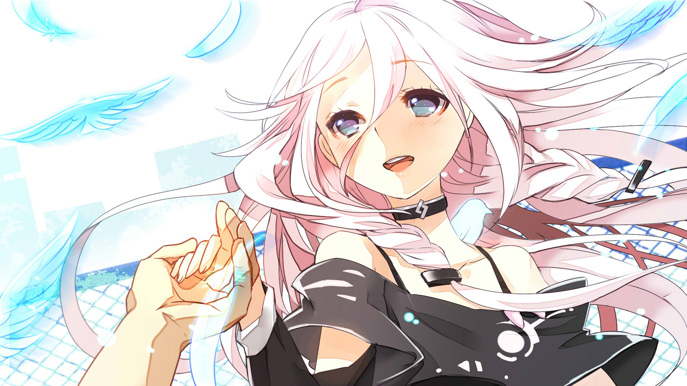

IA는 1st PLACE에서 소속 가수 Lia를 VOCALOID화한 VOCALOID3 음원이자 캐릭터다VOCALOID 시장에서 전에 없던 독특한 이미지 캐릭터부터, 데모 곡으로 공개된 노래가 보통 명곡도 아니고 그 유명한 새의 시. 신비하면서 청순한 느낌의 일러스트와 데모곡에서 보여준 압도적인 성능으로 인하여 발매 전부터 호평을 받았다.

독특한 목소리와 신비스러우면서도 청순한 캐릭터로 인하여 나오자마자 VOCALOID3 라이브러리들 중에서 가장 많은 인기를 얻고 있다. 아쉽게도 기존 VOCALOID 캐릭터들의 인기를 넘어서지는 못했으나, 차츰 곳곳에서 입지가 넓어지고 있다. 특히 신 보컬로이드라는 점에서 팬층의 화력이 강하다. VOCALOID의 암흑기라고 불리는 2014년, 2015년까지도 하츠네 미쿠, 카가미네 린·렌, 유즈키 유카리, GUMI와 같이 꾸준히 인기를 차지하고 있는 VOCALOID이다.